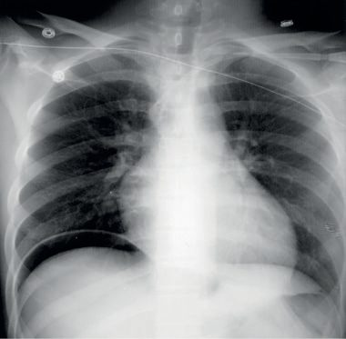
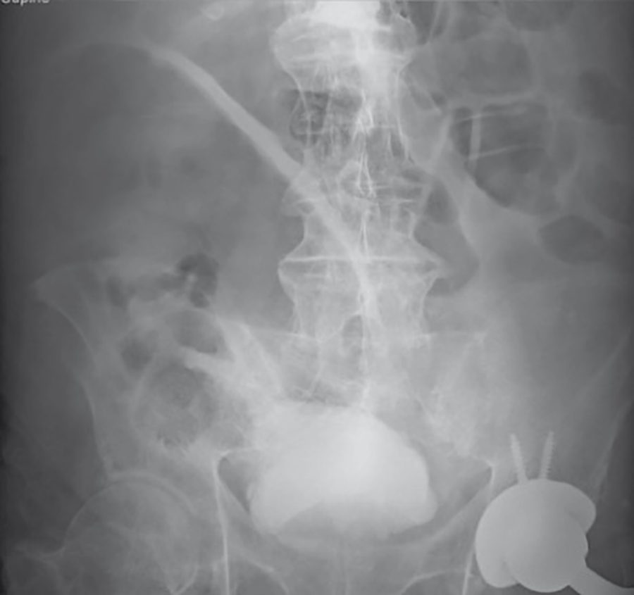

The Acute Abdomen
Summary
- Acute abdominal pain is the commonest emergency surgical presentation to hospitals in the UK [1].
- The differential is enormous, but the tools for working through it are few and reliable, and the final decisions are remarkably limited in number [1].
- This page covers the physiology that explains where the pain is felt, the history and examination that localise it, the regional differential diagnosis, the sequence of investigations and what each is actually good for, and the decision framework that converts a diagnosis into an operating time.
- Individual conditions (appendicitis, obstruction, diverticulitis, pancreatitis, peritonitis) have their own pages; this is the approach that leads to them.
Definition
The term acute abdomen encompasses many diverse entities [2]. Practically it means abdominal pain of recent onset severe enough to bring a patient to hospital, in whom a surgical cause must be confirmed or excluded.
Peritonitis is the finding that sets the clock. Diagnosing it is described as a slow-developing art requiring all your observation skills, and the task is to determine whether it is present, and if so whether it is localised or generalised, because that determines the urgency of care [1].
Pathophysiology
Where the pain is felt depends on which nerves are carrying it. Splanchnic pain from an organ, experienced through the autonomic system, is poorly localised to the midline; somatic pain from the body's surface layers is well localised [3].
That distinction has a direct clinical use. If the patient can localise the pain and the examiner can localise the tenderness, somatic fibres are being stimulated, which means the disease has progressed to irritate the parietal peritoneum [1]. The diagnosis becomes easier at exactly the moment the urgency increases [1].
- Early on, pain follows the embryological origin of the diseased organ rather than its anatomical position [1].
- Foregut structures (stomach, liver, gall bladder, pancreas, spleen and duodenum) give epigastric pain.
- Midgut structures (small bowel, appendix and right colon) give periumbilical pain.
- Hindgut structures (left colon, sigmoid and rectum) give hypogastric or suprapubic pain [1].
Referred pain is pain felt at a distance from its source, and is caused by the inability of the central nervous system to distinguish visceral from somatic sensory impulses; the classic example is diaphragmatic inflammation producing pain experienced only at the tip of the shoulder [3].
Clinical features
History
Onset separates the categories of disease. When pain has a truly acute or sudden onset, patients often remember the exact time or precisely what they were doing, this happens when a viscus perforates or a blood vessel splits or ruptures [3]. Inflammation, infarction and obstruction of a hollow viscus all produce pain of more insidious onset [3].
Character separates them further. Constant pain, gradual in onset but progressively worsening, suggests underlying infection or inflammation in an organ [1]. Colic is intermittent and poorly localised, a visceral pain, and indicates peristalsis against an obstruction [1].
Two patterns deserve to be recognised on sight. Severe pain out of proportion to the clinical signs should raise suspicion of organ ischaemia, which may need urgent surgery to save that organ [1]. And pain in the loin or back arises at least partly from retroperitoneal structures, consider the pancreas, the renal tract and the abdominal aorta [1].
Pain that appears in one site, disappears, and then reappears elsewhere is not radiation, it is a new pain in another place [3]. Record the calendar date of onset and, in brackets, the interval to the present examination, since it is the intervals rather than the dates that bear on the diagnosis [3].
It is worth asking patients what they think is causing the pain: even when they are entirely wrong, the answer gives insight into their worries [3].
Examination
- Light palpation comes first, and starts away from the pain.
- Rest a hand gently on the abdomen and press lightly, moving systematically over the whole abdomen, starting, for a right-handed examiner, in the left iliac fossa and moving anticlockwise to finish in the right [4].
- Ask the patient to indicate the site of pain before beginning, so that you start over a non-tender area and move towards the tender spot [4].
- Grade the tenderness rather than simply recording it.
- Palpation over an area of mild tenderness merely causes pain; guarding (tightening of the abdominal muscles in response to pressure) indicates severe tenderness [4].
- Sudden withdrawal of pressure may cause a sharp exacerbation, known as rebound or release tenderness; this test can distress the patient, and it is preferable to assess rebound by the response to light percussion [4].
Only when light palpation elicits nothing should the process be repeated more firmly to look for deep tenderness [4]. The whole abdomen is then palpated for the presence, position, shape, size, surface, edge, consistency, fluid thrill, resonance and pulsatility of any mass [4].
The five things never to omit are the supraclavicular lymph nodes, the hernial orifices, the femoral pulses, the genitalia, and the anal canal and rectum [4].
Etiology
The Oxford Handbook arranges the causes by abdominal region, which is the form most useful at the bedside [1].
| Region | Causes |
|---|---|
| Right hypochondrium | Right lower lobe pneumonia or pulmonary embolism; cholecystitis; biliary colic; hepatitis |
| Epigastrium | Pancreatitis; gastritis; peptic ulcer; myocardial infarction |
| Left hypochondrium | Left lower lobe pneumonia or pulmonary embolism; large bowel obstruction |
| Right lumbar | Renal colic |
| Umbilical | Appendicitis; intestinal obstruction; intestinal ischaemia; aortic aneurysm; gastroenteritis |
| Left lumbar | Crohn's disease; renal colic; large bowel obstruction |
| Right iliac fossa | Appendicitis; Crohn's disease; right tubo-ovarian pathology |
| Hypogastrium | Cystitis; urinary retention; dysmenorrhoea; endometriosis |
| Left iliac fossa | Sigmoid diverticulitis; left tubo-ovarian pathology |
Gynaecological causes must be worked through explicitly in any woman with lower abdominal pain, since careful history is what separates them from common surgical diseases such as appendicitis [1]. They fall into four groups: complications of menstruation, including retrograde menstruation, mid-cycle ovulation pain (Mittelschmerz) and endometriosis; ovarian cyst problems, meaning bleeding into a cyst, rupture or torsion; tubo-ovarian infection including pelvic inflammatory disease and abscess; and ectopic pregnancy, including rupture and bleeding [1].
In children the arithmetic is reassuring but not permissive. Central and lower abdominal pain in children under 12 is self-limiting and non-specific in 70%, arises from benign gynaecological causes in 25% of girls, and is pathological in only 10 to 20% [1].
Diagnosis
Investigations should be chosen, not ordered as a set. Many tests may be requested, but usually only one or two are really useful [1].
Blood tests are very rarely diagnostic, with one exception: a serum amylase more than three times the upper limit of normal is very highly suggestive of acute pancreatitis [1]. The standard panel is full blood count, urea and electrolytes, amylase, liver function tests, CRP, and group and save [1].
- Plain abdominal radiographs are very rarely diagnostic except in obstruction [1].
- Where they do help, small and large bowel are distinguished by four features: the small bowel lies centrally and the large bowel peripherally; the valvulae conniventes of the small bowel traverse the entire width of the lumen while the haustra of the large bowel do not; and the calibre differs even when obstructed, typically 3.5 to 5 cm for small bowel and 5 to 8 cm for large [2].
- A normal plain film does not exclude obstruction [2].
- The erect chest radiograph is the ideal first test for hollow organ perforation, detecting as little as 10 to 20 mL of free air under the diaphragm, but it is pointless in appendicitis [1][2].
- Three technical points determine whether it works: leave about 10 minutes between sitting the patient up and taking the film to allow air to rise; look for free air under the right hemidiaphragm to avoid misinterpreting the gastric air bubble; and recognise Chilaiditi's syndrome, the harmless interposition of large bowel between liver and diaphragm [2].
- After recent abdominal surgery, postoperative free air can persist in the peritoneal cavity for 5 to 7 days [2].
Ultrasound is first line in a well patient with upper abdominal pain, being an excellent investigation for suspected hepatobiliary pathology [1]. Pelvic ultrasound, transabdominal or transvaginal, is a good test for excluding gynaecological causes but often misses appendicitis and other surgical causes [1].
CT is requested in a sick patient after senior review, when the diagnosis is in doubt or the illness severe enough that early confirmation is required, and should be used sparingly in young people to limit lifetime radiation accumulation [1].
- Three points of CT technique are worth carrying.
- For suspected obstruction, the key is a transition zone from dilated proximal to collapsed distal bowel, which also separates mechanical obstruction from paralytic ileus; no oral contrast is needed, since luminal fluid is a natural contrast agent and oral contrast may not reach the obstruction in time [2].
- For suspected perforation, oral or rectal contrast is likewise unnecessary, and barium is absolutely contraindicated wherever a gastrointestinal leak is possible, since it can induce a serious and potentially fatal peritonitis [2].
- For suspected ischaemia, intravenous contrast is essential to look for thrombus or embolus in the mesenteric vessels, though low-flow ischaemia occurs without them; the findings are bowel wall thickening, submucosal oedema and free fluid between the folds of the mesentery, particularly if haemorrhagic [2].
- Two CT findings carry particular weight.
- A closed loop obstruction, bowel obstructed at two points, often close together and related to an internal hernia or adhesional band, is prone to ischaemia, and is suspected when bowel is dilated distal to one transition point with a further transition point beyond [2].
- And air in the bowel wall tracking into mesenteric veins and thence to the portal vein is a sign of grave prognostic significance in an adult, implying widespread and relatively longstanding infarction [2].


Thresholds and severity
The time frame for reaching a diagnosis varies with the presentation, and it is not uncommon for 12 to 24 hours of masterful inactivity to be used to let the picture clarify, the young patient with central and mild right iliac fossa pain is the typical case [1]. That approach must not be assumed to be normal: some causes require diagnosis and management immediately on admission, or within 6 to 8 hours or less [1].
UK practice prices urgency in hours, using the NCEPOD categories, and the decision you are actually making is which of ten options applies. The Oxford Handbook sets them out as a single list: home with no follow-up; home with hot clinic review; discharge to another specialty; admit for observation or conservative, non-operative management; admit for further investigation with operation unlikely; admit for further investigation with operation likely; admit for an expedited operation (NCEPOD category 3, after 24 hours); admit for an urgent operation (category 2b, within 24 hours); admit for a very urgent operation (category 2a, within 6 hours); and admit for an immediate operation (category 1, within 1 hour) [1].
NCEPOD (the National Confidential Enquiry into Patient Outcome and Death) provides the guidelines on emergency surgical care, and the term is used in clinical practice synonymously with emergency operating [1]. The Royal College of Surgeons of England's Emergency surgery: standards for unscheduled surgical care (2011) is the accompanying standard [1].
Two habits are recommended for building the judgement. Practise making these decisions without having to act on them, once the initial investigations are back; and make the decision explicit, so that feedback on it can be useful [1]. Watching senior surgeons examine patients is named as the way to learn to diagnose peritonitis [1].
Treatment and Management
Four rules govern the first hour [1].
First, take a proper history and examination, do not work to the diagnosis given by the referring doctor [1].
- Second, resuscitate properly and give adequate analgesia. There is no reason to withhold analgesia before senior clinical examination, and analgesia often helps clarify the diagnosis [1].
- Intravenous morphine never hides established clinical signs, and often helps clarify the diagnosis through its anxiolytic effect [1].
- For suspected intra-abdominal pathology 5 to 10 mg of morphine IV is reasonable; for suspected renal pathology, diclofenac 100 mg PR is very effective, avoided in asthma and renal disease [1].
Third, identify the septic patient early and get them onto the sepsis pathway [1]. Establish secure intravenous access, and catheterise with a fluid balance chart only if the patient is hypotensive [1].
Fourth, do not give intravenous antibiotics without a clear diagnosis, they will suppress but may not adequately treat a developing infection [1]. The exception is sepsis, where empirical antibiotics start early as part of the pathway [1].
Until a definitive plan exists, concentrate on fluid balance, analgesia, thromboprophylaxis and monitoring of vital signs [1]. Keep the patient nil by mouth if an operation is likely, remembering that gastric emptying is delayed in emergency patients, the minimum fasting is 2 hours for clear fluids and 6 hours for solids [1].
Communication is treated as part of the management, not an afterthought. Communicate your thinking clearly to the patient, to senior colleagues, and to the nurse in charge of the patient: many complaints, mistakes and vital omissions arise from poor communication at this stage [1].
Procedural interventions
Gastrografin has a diagnostic and occasionally a therapeutic role where uncertainty persists between mechanical obstruction and ileus after CT: delayed plain abdominal radiographs at 1 and 4 hours after ingestion of dilute Gastrografin (typically 75 mL of Gastrografin mixed with 75 mL of water) show whether contrast reaches the colon, and the osmotic effect can itself be therapeutic [2].
- For gastrointestinal haemorrhage, endoscopy is the useful first-line investigation for both upper and lower tracts [2].
- Where bleeding is intermittent, radioisotope-labelled red cell scanning helps; where bleeding is thought to be active, the best investigation is a CT mesenteric angiogram, with a non-contrast phase to look for bright blood in the lumen, an arterial phase for a blush of active extravasation, and a portal venous phase for wall thickening, masses and venous bleeding points [2].
- Catheter angiography can then embolise the bleeding point [2].
Complications
Intra-abdominal abscess is what intra-abdominal sepsis becomes when tissues or anatomy contain it [1]. Three locations are common: alongside the organ of origin, such as paracolic in diverticulitis or parapancreatic after infected pancreatitis; pelvic, especially after appendicitis or generalised peritoneal infection; and subphrenic, for example after upper gastrointestinal perforation [1].
The causes are sigmoid diverticulitis, acute appendicitis, severe acute cholecystitis, upper gastrointestinal perforation, postoperative anastomotic leakage, infected acute pancreatitis, trauma and gynaecological sepsis [1].
- The clinical picture is the same whatever the source.
- Symptoms are malaise, anorexia, constant localised abdominal pain, sweats and rigors, and either diarrhoea or constipation [1].
- Signs are a swinging fever typically peaking above 38.5°C twice a day, a tachycardia that tends to follow the temperature, and localised tenderness with a possible mass if the abscess is accessible and large enough [1].
Helical CT is the diagnostic investigation of choice; pelvic ultrasound is occasionally useful where a pelvic abscess is suspected and CT is being avoided on account of age [1]. Blood should be sent for full blood count, urea and electrolytes, liver function tests, CRP, group and save, clotting and blood cultures [1].
Outcomes
The diagnoses in the acute abdomen are many, but the final actions required are remarkably limited [1]. Good decisions come with practice, and are best made explicit so that feedback can improve them [1].
Two systematic errors account for much of the avoidable harm. One is anchoring on the referring diagnosis rather than taking a history afresh [1]. The other is treating masterful inactivity as the default rather than as a decision that has to be justified against the conditions requiring management within 6 to 8 hours [1].
References
- Oxford Handbook of Clinical Surgery, 5th ed., Ch. 26 Emergency surgery topics
- Bailey & Love's Short Practice of Surgery, 28th ed., Ch. 8 Diagnostic imaging
- Browse's Introduction to the Symptoms and Signs of Surgical Disease, 6th ed., Ch. 1 History-taking and clinical examination
- Browse's Introduction to the Symptoms and Signs of Surgical Disease, 6th ed., Ch. 15
- Bailey & Love's Short Practice of Surgery, 28th ed., Ch. 67 The stomach and duodenum
- Sabiston Textbook of Surgery, 22nd ed., Ch. 85 The Acute Abdomen